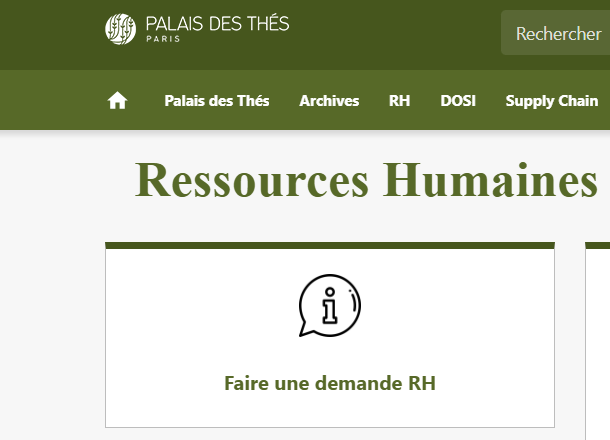
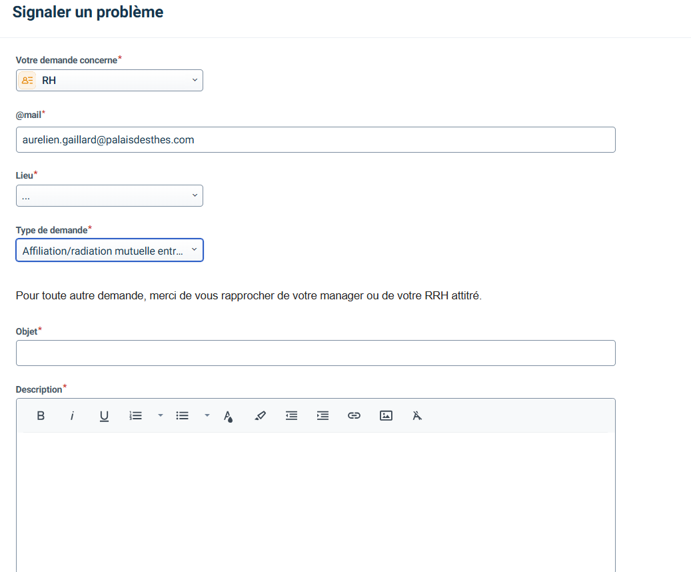
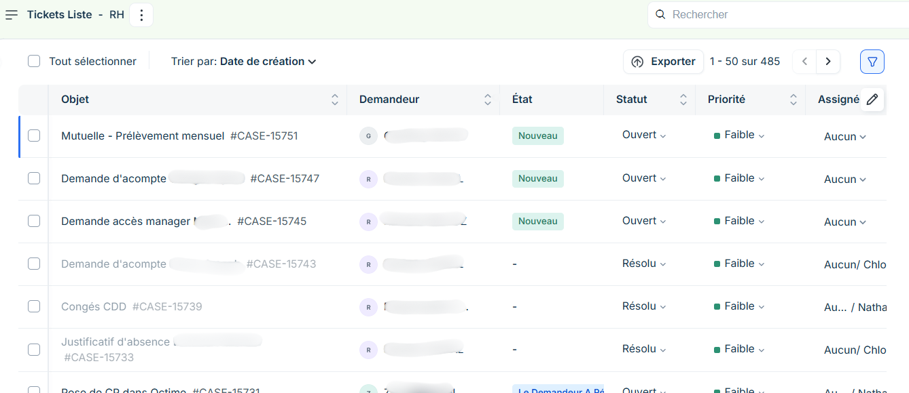

Projet Entreprise · Palais des Thés
Outil de Ticketing RH
Freshservice
Monday
Ressources Humaines
ITSM
Contexte du projet
Le service des Ressources Humaines du Palais des Thés avait besoin de centraliser et structurer les demandes des employés. L'objectif était de faciliter le suivi, le traitement et la traçabilité des requêtes, tout en améliorant la communication interne.
Le Besoin
Face à un volume croissant de demandes RH traitées de manière informelle, le service avait besoin d'un outil dédié permettant :
Centralisation — regrouper toutes les demandes des employés en un seul point d'entrée.
Suivi & traçabilité — historiser chaque demande et son état d'avancement en temps réel.
Communication interne — améliorer les échanges entre employés et service RH via un canal structuré.
Traitement efficace — réduire les délais de réponse et éviter les demandes perdues ou oubliées.
Réalisation & Outils
Après recueil des besoins auprès du service RH et définition des fonctionnalités essentielles, les outils suivants ont été retenus et mis en place :
Recueil des besoins auprès du service RH et identification des fonctionnalités prioritaires.
Création et configuration d'un formulaire Freshservice adapté aux cas d'usage RH.
Mise en place d'un tableau de suivi Monday pour piloter l'avancement du projet.
Contact et coordination avec le prestataire pour les aspects techniques.
Accès depuis l'intranet Palais des Thés

Formulaire de création de ticket RH (Freshservice)

Vue backlog côté service RH — 485 tickets traités

Bilan & Difficultés
Le projet a permis de structurer le traitement des demandes RH au sein du Palais des Thés, en fournissant un canal dédié et traçable pour les employés.
Point de vigilance
Le projet a connu des ralentissements dus à des retours tardifs du service RH, freinant la validation des étapes. Face à ces blocages, je me suis maintenu mobilisé pour relancer les interlocuteurs et reprendre l'avancement dès réception des validations.
Compétences acquises
Gestion de projet : Recueil des besoins, coordination avec les parties prenantes, suivi sur Monday.
ITSM : Configuration d'un outil de ticketing (Freshservice) adapté à un usage métier non-IT.
Communication : Interface avec les équipes RH et les prestataires techniques.
Adaptabilité : Gestion des blocages et relances dans un contexte multi-interlocuteurs.